数据结构 算法 之 Array
C++ Array 操作及定义
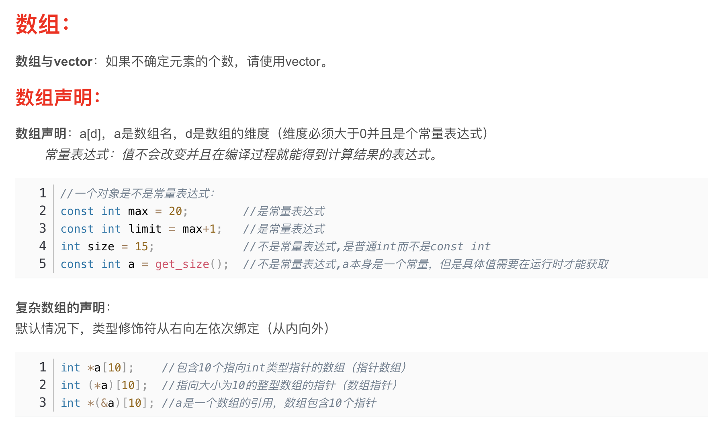 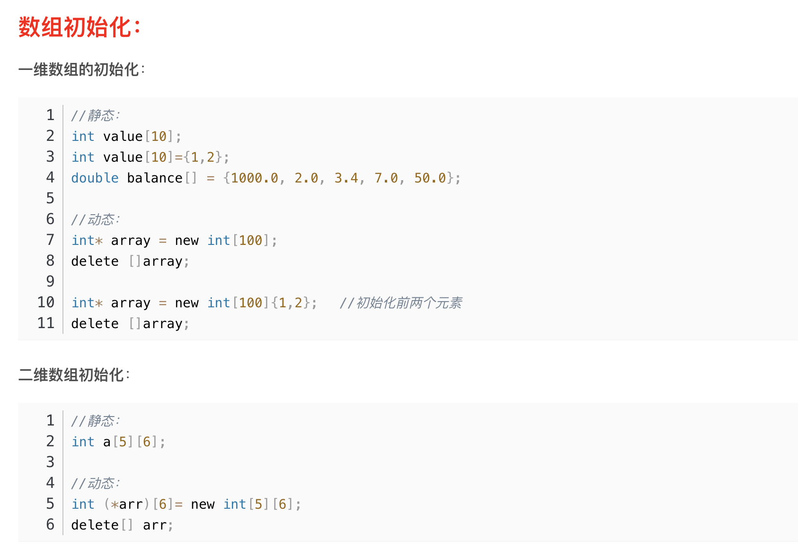 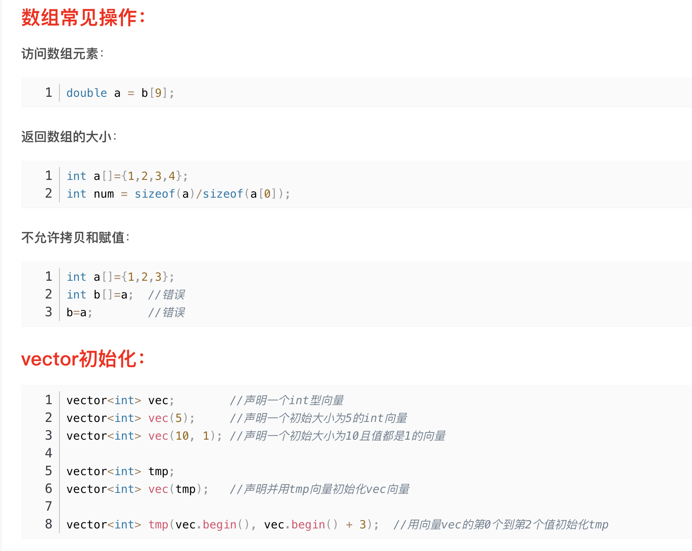 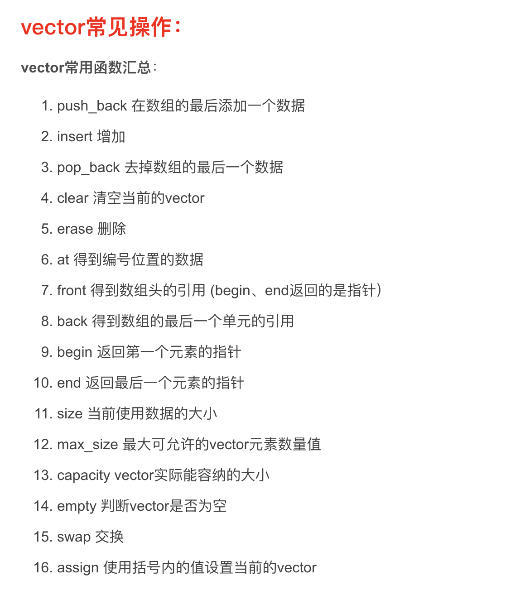 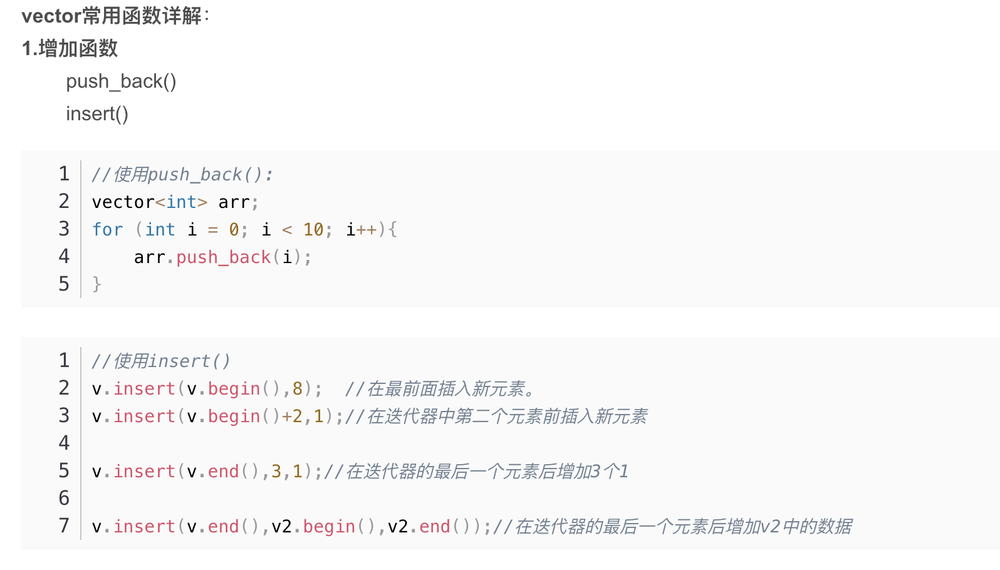 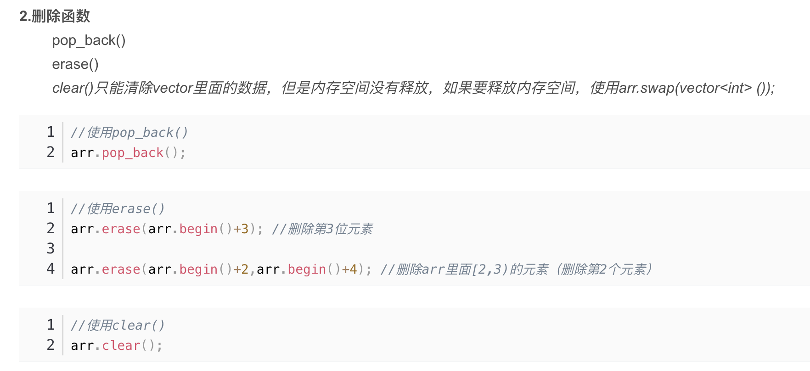 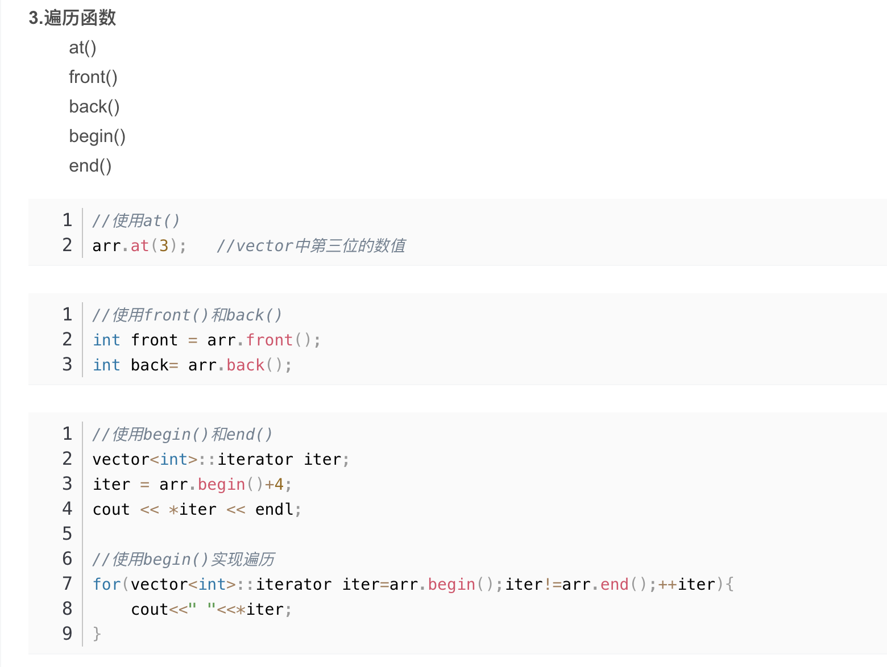 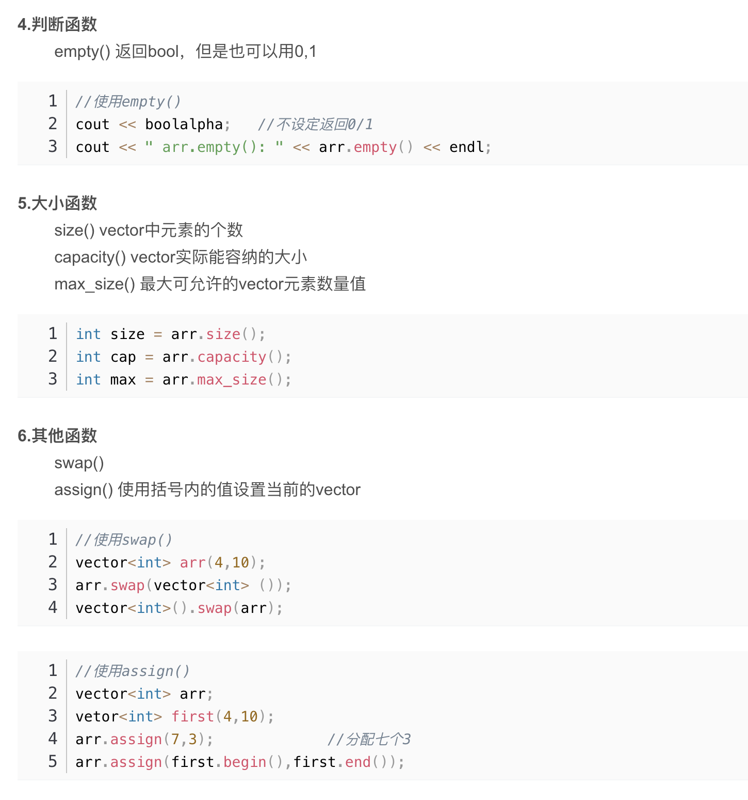
Python Array 操作及定义
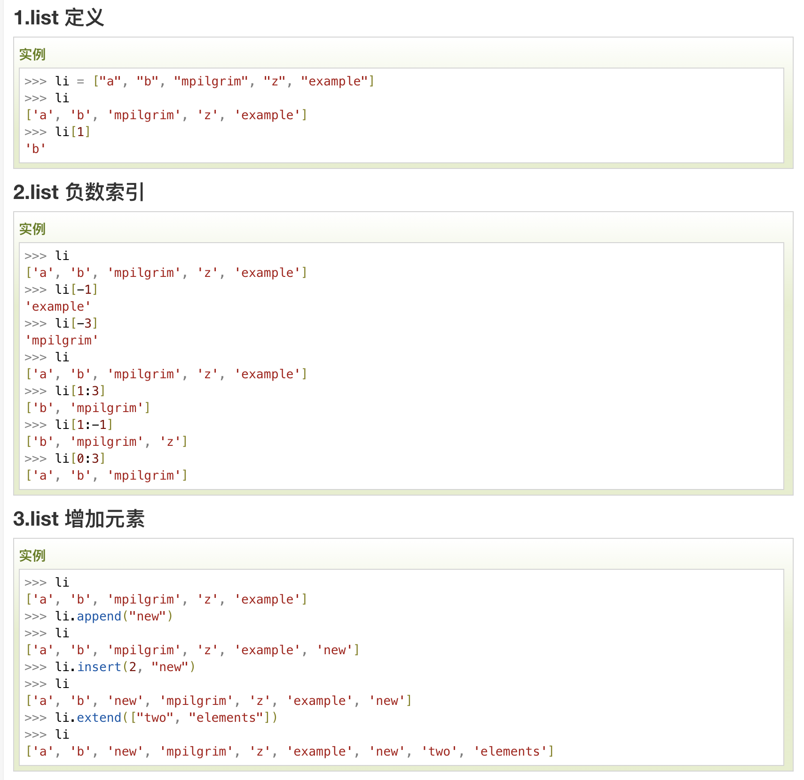 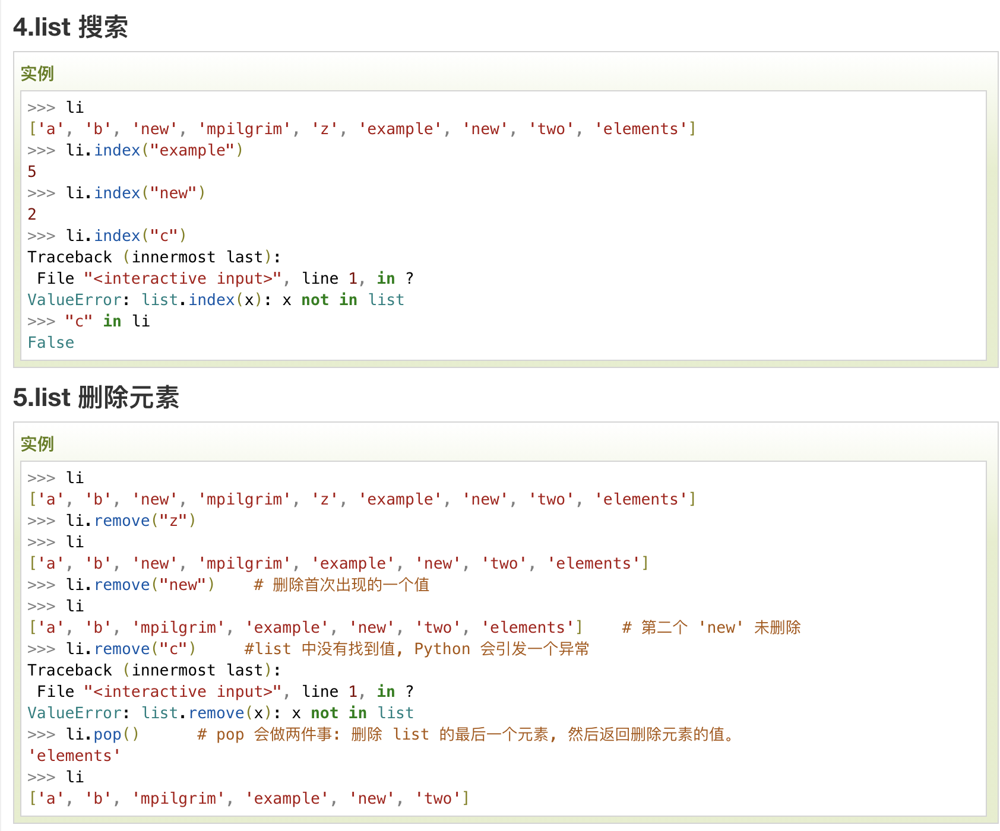 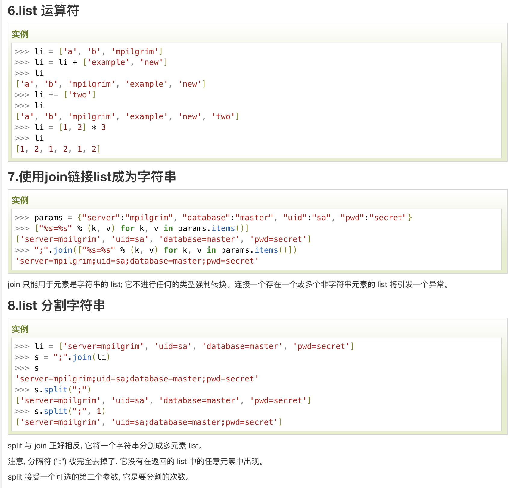 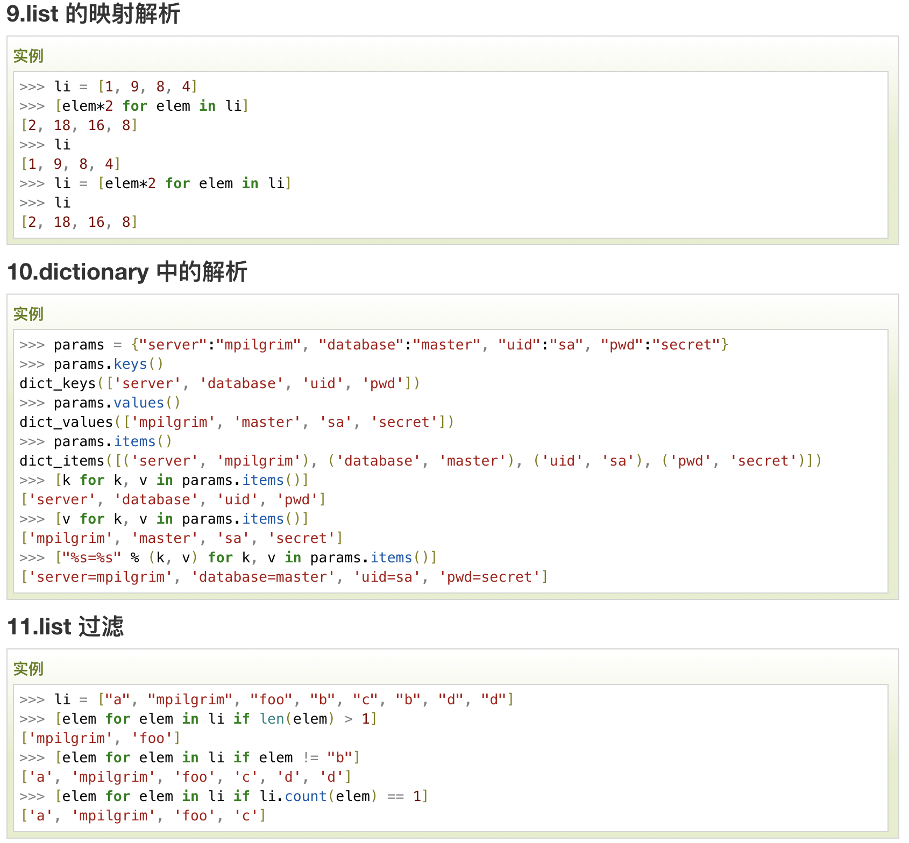
LeetCode 4
解决方案：
个人认为这个解决方案已经很高效了，或许还有更高效的
class Solution:
def findMedianSortedArrays(self, nums1: List[int], nums2: List[int]) -> float:
# 此处 python 数组融合可以使用 + 完成
num = nums1+nums2;
num.sort();
lenth = len(num);
if lenth % 2 == 0:
return (float((num[int(lenth/2)]+num[int(lenth/2)-1]))/2)
else:
return (float(num[int(lenth/2)]))
C++
时间是上面python的2/3，内存占用大概是上面Python的8倍，原因是使用Vector会占用大量空间
Vector 时间复杂度o(n)，可以用list,时间复杂度o(1)
#include <iostream>
#include <vector>
#include <string>
#include <typeinfo>
#include <algorithm>
using namespace std;
class Solution {
public:
double findMedianSortedArrays(vector<int>& nums1, vector<int>& nums2) {
// Vector 的拼接，在 nums1 的后面拼接 nums2
nums1.insert(nums1.end(),nums2.begin(),nums2.end());
sort(nums1.begin(),nums1.end());
int length = nums1.size();
if (length%2 == 1){
//cout<< " 单数 length/2 = " << length/2 <<endl;
//cout << double(nums1[length/2]) << endl;
return double(nums1[length/2]);
} else{
//cout<< " 双数 length/2 = " << length/2 <<endl;
//cout << double(nums1[length/2]+nums1[length/2-1])/2 << endl;
return double(nums1[length/2]+nums1[length/2-1])/2;
}
}
};
C 的一个实现，主要是使用数组完成
void sort(float *a,int len){
int temp;
int i,j;
for(i = 0; i <len; i++) {
for (j = 0; j< len; j++)
if (a[j] > a[i]) {
temp = a[i];
a[i] = a[j];
a[j] = temp;
}
}
}
double findMedianSortedArrays(int* nums1, int nums1Size, int* nums2, int nums2Size){
int length1 = nums1Size;
int length2 = nums2Size;
int new_length = length1+length2;
float new_array[new_length];
for (int i = 0; i < length1; ++i) {
new_array[i] = nums1[i];
}
for (int i = length1, j = 0; j < length2; ++i, ++j) {
new_array[i] = nums2[j];
}
sort(new_array,new_length);
if (new_length%2 == 1){
return new_array[new_length/2];
} else{
return (new_array[new_length/2]+new_array[new_length/2-1])/2;
}
}